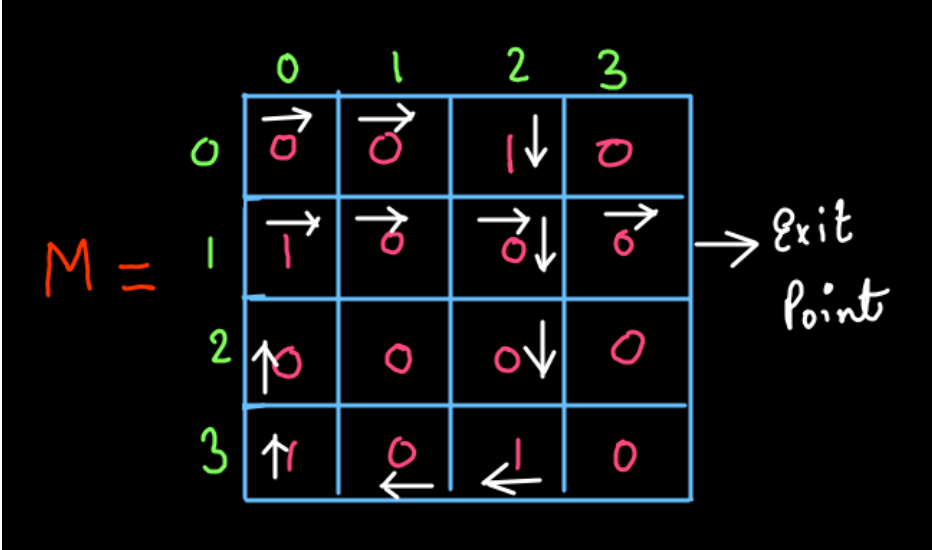
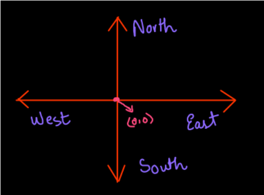
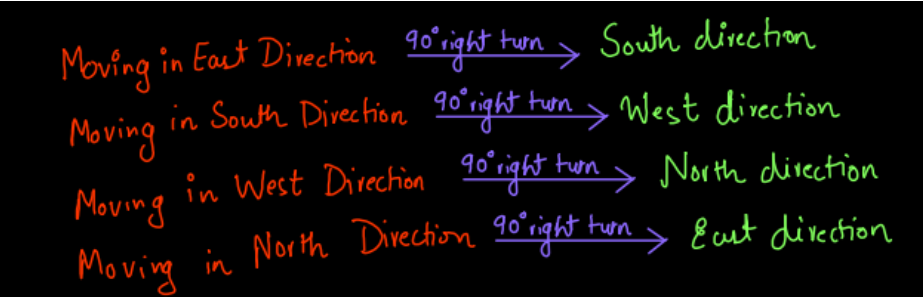
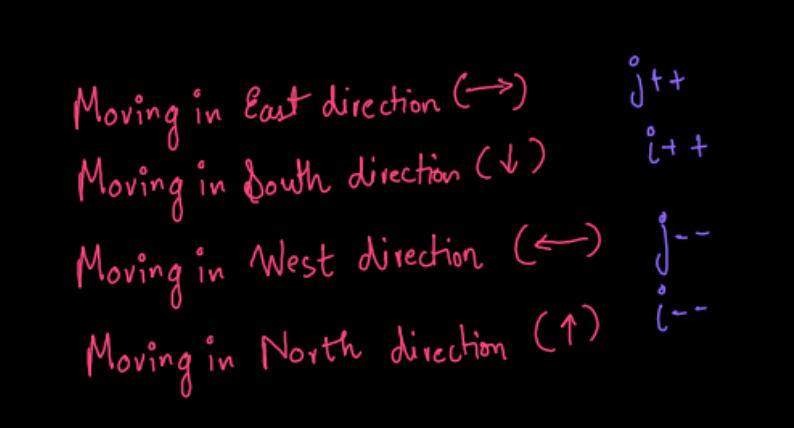
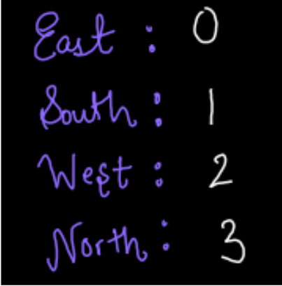
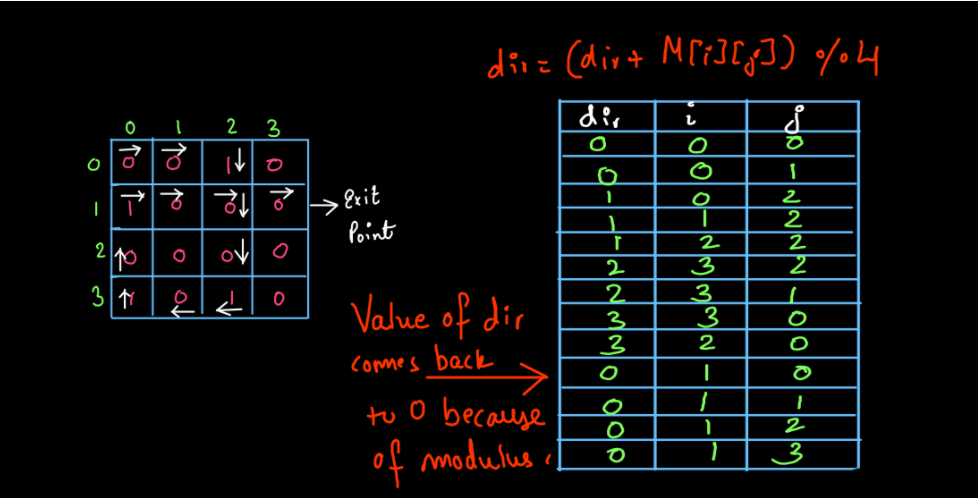

Long time ago, people who skipped their meals and sleep were called saints. Now they are called programmers.
Exit Point of a Matrix:
Welcome back, dear reader. We are back with a very interesting and a little bit tricky (still easy) problem this time. The problem is called EXIT POINT OF A MATRIX.
Important links: Problem, Question video, Solution .
<
UNDERSTANDING THE PROBLEM
The problem states that we have a matrix or a 2-D array that has only 1’s and 0’s as the values inside it. If we encounter a 0 in the matrix we have to keep moving in the direction that we were moving, otherwise, when we encounter 1, we will take a 900 right turn. For an instance, look at the matrix shown below:

The matrix M is a square matrix with all values either 0’s or 1’s. We always have to enter from the leftmost corner i.e. from M[0][0] and whenever we encounter 1 we will change the direction and take a 90o right turn (as shown). As a result of this, we exited the matrix M at (1,3) i.e. first row and third column. You are requested to trace the path of the matrix by yourself with the help of the path shown in the diagram.
Note that the input matrix may or may not be a square matrix.
So, did you get the question? Don’t worry if you didn’t. You may refer to the question video for a better understanding of the question.
Now that we have understood the question, we want you to think about the solution yourself. Give some time to the question, don’t worry if you don’t get any ideas, we are here with you but you have to try. We recommend you grab a pen and a paper, take some example matrices and try to find out their exit points manually. Then try to establish some conclusions.
APPROACH
1. Understanding The Directions:
So, do you know about the four directions? Of course, you do. Still, you may look at the diagram shown below if you want to just have a look at these concepts. So, the directions are aligned to each other as shown in (fig-2).

See, we are entering the matrix at (0,0) which we can also consider as the origin as shown in the fig-2. If we encounter 0 at the M[0][0] we will move forward in that row (see fig-1). If we compare the movement in the matrix with the directions shown in fig-2 we can say that entering the matrix at (0,0) is analogous to stand at the origin in the directions coordinates and moving forward in a row when 0 is encountered is analogous to moving in the East direction from the origin. Now, as you can see in fig-1, at M[0][2] we have encountered 1 for the first time and on getting 1 we turned 90o to the right and started moving downwards in the column. This is analogous to taking a 90o right turn and moving in the South direction in the direction coordinates (see fig-2).
To sum up we can visualize the movement inside a matrix in terms of directions very easily and we are doing this to make our problem a little easier as we approach to solve it. The summary of 90o turns goes as follows:

2. Deciding about movements:
Now that we have understood the analogy of movement in a matrix and directions, let’s establish a relationship between the values of rows and columns and their change with the change in directions. When we move in the East direction we are simply traversing a row. So the row value will remain the same and the column value increases. If we are traversing the row with ‘i’ variable and the column with a ‘j’ variable then ‘i’ will remain the same and ‘j’ will increment. When we are moving in the south direction we are moving down in a column. So the column value will remain the same i.e. ‘j’ remains the same and ‘i’ increments as the row value is increasing. When we move in the West direction we are moving backward in a row. So, the row value i.e. ‘i’ does not change while j decrements. When we are moving in the North direction we are moving up in a column. So the column value remains the same i.e. ‘j’ does not change while ‘i’ decrements. A summary of this is given in (fig-4). You may also watch the solution video (0:11-1:13) if you face any problems here regarding all the direction concepts.

3. Traversing The Matrix:
Now, we request you to watch the solution video (1:15-2:46) for getting a better understanding of the upcoming part of the article. There are 4 directions. We have assigned an integer to each direction. Since we enter the matrix in the East direction we have given numbers as follows:

When we are in the east direction the variable (say dir) will be 0. Similarly, it will be 1 when we are moving in the South, 2 for West, and 3 for North. These values indicate a change in direction. How? Think before moving to the answer!!!!!
We will add the value of M[i][j] to the current value of dir, each time we make a move. Suppose the value of dir is 0 initially. When we enter M[0][0] (in fig-1) the value of M[0][0] gets added to dir value which is also 0. So, the value of dir has not changed, we move forward in the row. This is because we have assigned dir=0 for East and East means moving in the same row. Then we move to M[0][1] and this gets added to dir and since it is still 0, we will move forward in the row again. Now when we reach M[0][2] it has value 1.When this gets added to dir the value of dir changes to 1. Now we will start moving down the column as dir value 1 signifies South direction and we are moving in South by going down the column. Again now M[1][2]=0 gets added to dir and dir remains 1. So, we are going to move in the same direction only. This is how we are changing directions.
Now let’s skip to the part where we are already moving in the North direction. Now, when we are in the North direction and (according to fig-1) at M[1][0] we encounter 1 and we add it to dir value, dir value was already 3 and on adding 1 it becomes 4, but we have not assigned 4 to any direction and we know that when we are moving in North direction and we encounter 1 we will move to East. So, we will take the modulus of the (dir+M[i][j]) by 4 i.e. dir=(dir+M[i][j])%4 to move 90o to the right.
Now, we request you to watch the solution video (2:55-13:54) to understand the above-explained procedure in-depth and we would also request you draw this table (shown in fig-6) which is drawn in the video, by yourself for every move so that you can understand how the directions are changing and how we are changing the values of ‘i’ and ‘j’ according to the directions.

So, did you make this table? If not, we would again request you to do it as this is going to give you the insight of working of this algorithm.
4. The Exit Point:
The exit point conditions are given below:
i becomes less than 0
i becomes equal to array.length
j becomes less than 0
j becomes equal to array[0].length
In any of these cases, we will get the exit point as these are the invalid values of i and j. You may watch the solution video (13:54-16:37) to understand this concept in more depth.
The code for the problem is given below:
Pseudo code
Initialize dir variable to 0.
Initialize i for rows and j for columns to 0 each.
Start from M[0][0]. Add M[0][0] to dir and substitute (M[0][0]+dir)%4 in dir.
If dir is still 0 keep moving forward by doing j++ and keeping i same else
Make dir=1 and start moving downward in the column by doing i++ and keeping j the same. Keep moving in the same direction until you encounter 1.
Then dir changes to 2 and you have to move in the West direction.
Similarly when dir becomes 3 move in the North direction.
Exit the loop if you come out of the matrix and print the exit point.
Please try to code this without taking help of the video solution. It will help you develop a great insight on arrays. Once you have tried, do give a read to the solution code provided below and explained in the video.
COMPLETE CODE
import java.io.*;
import java.util.*;
public class Main {
public static void main(String[] args) throws Exception {
BufferedReader br = new BufferedReader(new InputStreamReader(System.in));
int n = Integer.parseInt(br.readLine());
int m = Integer.parseInt(br.readLine());
int[][] arr = new int[n][m];
for (int i = 0; i < n; i++) {
for (int j = 0; j < m; j++) {
arr[i][j] = Integer.parseInt(br.readLine());
}
}
int i = 0;
int j = 0;
int dir = 0; //East->0 South->1 West->2 North->3
while (true) {
dir = (dir + arr[i][j]) % 4; //To Keep the values between 0 and 3
if (dir == 0) {
j++; //Move in the same row (east direction)
} else if (dir == 1) {
i++; //Move down the column (south direction)
} else if (dir == 2) {
j--; //Move backwards in the row (west direction)
} else if (dir == 3) {
i--; //Move up the column (north direction)
}
if (i < 0) {
i++; //exit point is one row head (in 0th row)
break;
} else if (j < 0) {
j++; //exit point is one col ahead (in 0th col)
break;
} else if (i == n) {
i--; //exit point is one row back (in last row)
break;
} else if (j == m) {
j--; //exit point is one col back (in last col)
break;
}
}
System.out.println(i);
System.out.println(j);
}}
input
output
Run code
Analysis
Time Complexity
We have already mentioned that the time complexity of this method is O(mxn) where m is the number of rows and n is the number of columns. You can see we may have to traverse a large part of the 2-D array depending upon the combinations of values in the matrix. Therefore, the time complexity is O(mxn). If the array is a square matrix, we may write the time complexity is: O(n2) .
Space Complexity
The Space Complexity for this problem will be O(1) as we have not used any extra array or any extra memory to solve the problem.
So, we hope that you have understood the problem fully and know how every step is taking place in the problem. If you have any doubts regarding the problem you may refer to the complete solution video for clearing all your doubts. Happy Coding!
Some Suggestions:
Here are some suggestions from our side that you don’t want to miss:
This was a little bit of a tricky problem. You may have to watch the solution video a couple of times or read the article a couple of times to understand it completely and gain confidence in it.
The problems in the 2-D arrays section are mostly logical and require you to think about them, rather than studying some predefined algorithm to solve them. So, push your limits, my friend.